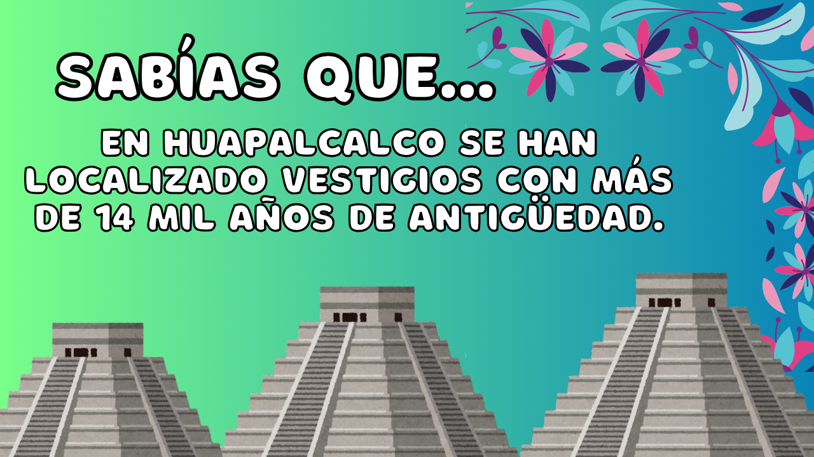
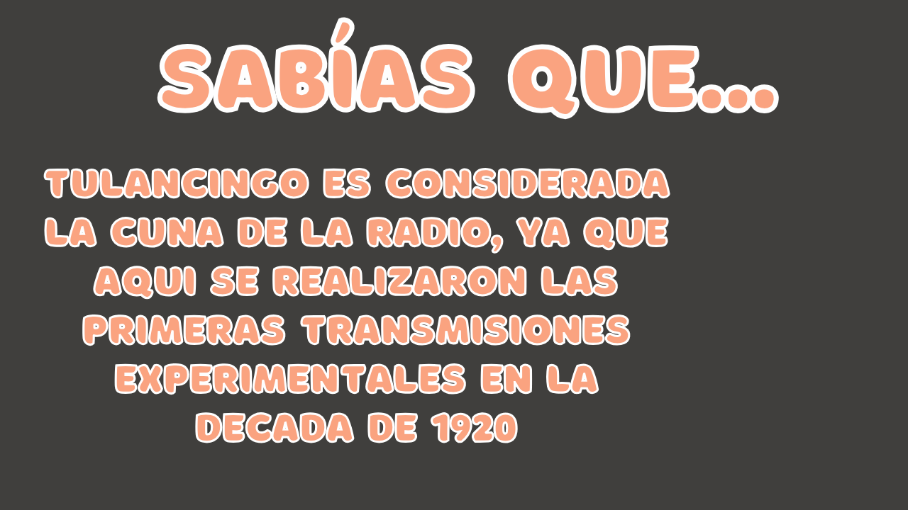
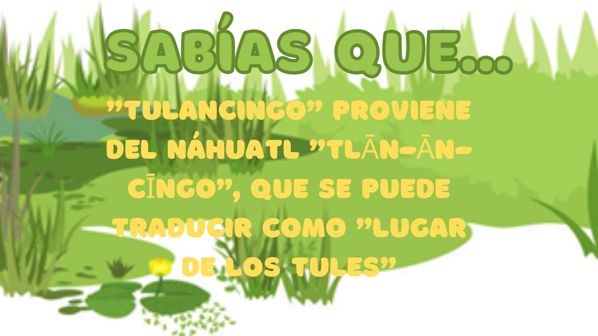
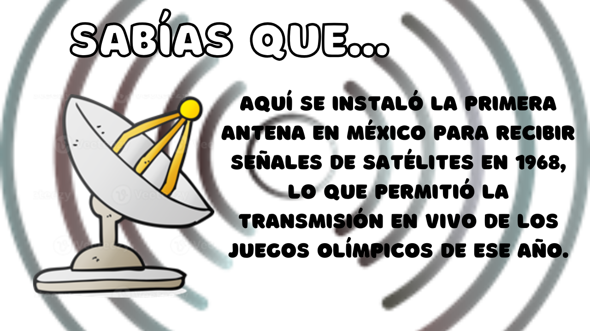
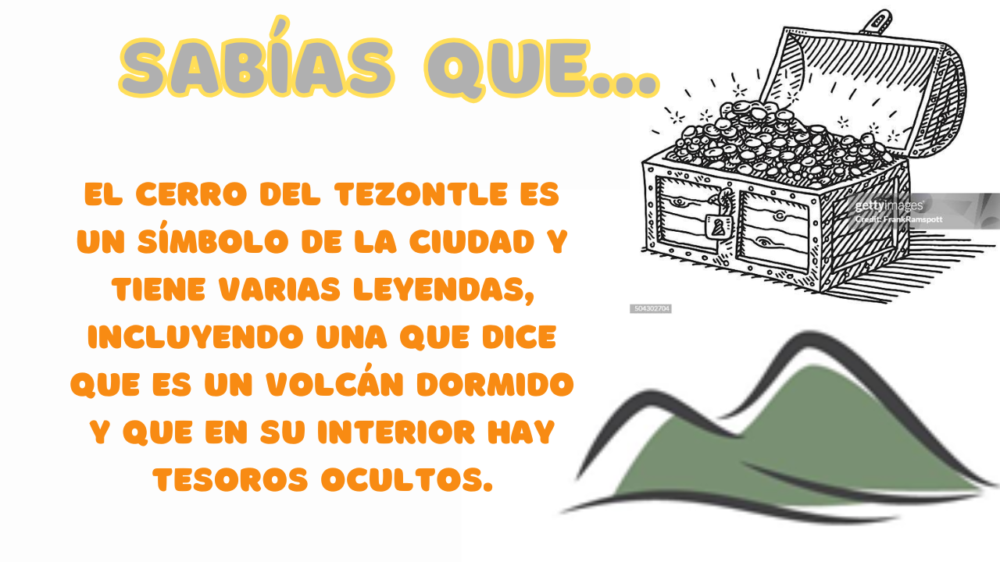
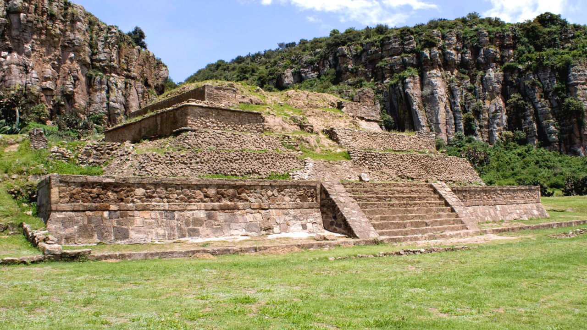
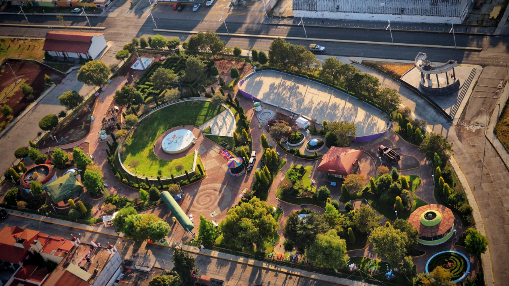
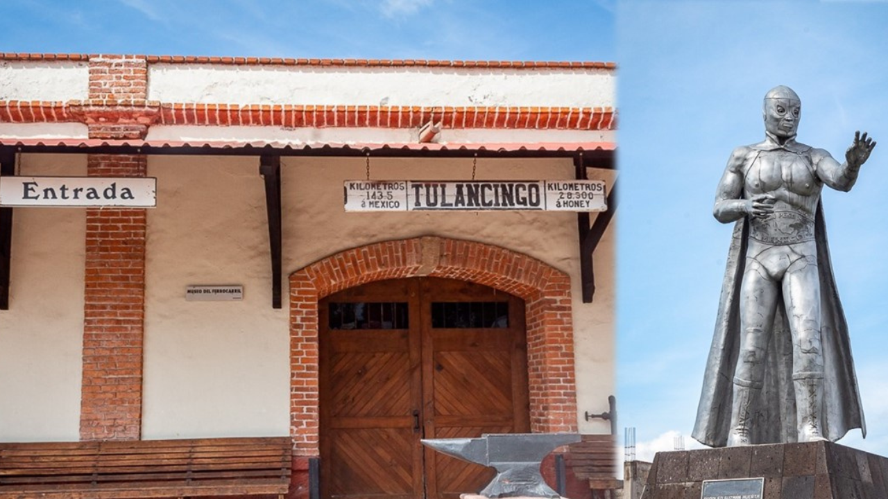
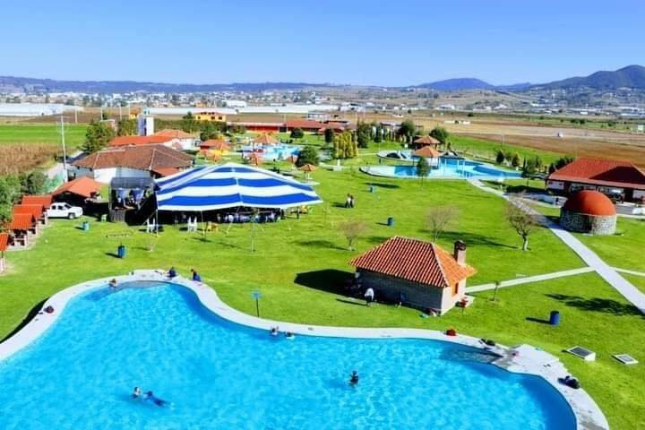

Redes
sociales
Guías

Zona arqueológica de Huapalcalco

Parque recreativo El Caracol

Museo del Santo

Aguas Termales
Tarjeta Virtual
si vas a viajar a tulancingo utiliza nuestra tarjeta de descuentos
Solicita tu tarjeta virtual y obtén descuentos exclusivos.
Tarjeta de descuentos TDTU
FOLIO
2025 0000 0001
TULANCINGO
Tarjeta del Turista
Dirección de Turismo
Quejas y Sugerencias
Déjanos tu opinión sobre nuestros servicios.
Déjanos tu opinión sobre nuestros servicios.
visitas
0